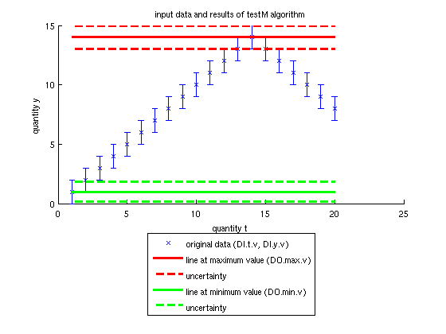

testG
Example for algorithm testG. Algorithm is usefull only for testing QWTB toolbox. It calculates maximal and minimal value of the record. GUF is calculated by wrapper.
See also qwtb
Contents
Generate sample data
Two quantities are prepared: t and y.
t.v = [1:20]; y.v = [1:14 13:-1:8];
All uncertainties are set to 1.
t.u = t.v.*0 + 1; y.u = y.v.*0 + 1;
Set degrees of freedom.
t.d = t.v.*0 + 60; y.d = y.v.*0 + 9;
Quantities are put into data input structure DI.
DI.t = t; DI.y = y;
Create calculation settings CS and set uncertainty calculation method to GUM uncertainty framework.
CS = [];
CS.unc = 'guf';
Call algorithm
Use QWTB to apply algorithm testG to data DI with calculation settings CS.
DO = qwtb('testG', DI, CS);
QWTB: default correlation matrix generated for quantity `t` QWTB: default correlation matrix generated for quantity `y` QWTB: uncertainty calculation by means of wrapper or algorithm
Plot results
Plot input data and calculated maximal and minimal values as a red and green lines with uncertainties represented by dashed lines.
figure hold on errorbar(DI.t.v, DI.y.v, DI.y.u, 'xb') plot([DI.t.v(1) DI.t.v(end)], [DO.max.v DO.max.v], '-r', 'linewidth', 3) plot([DI.t.v(1) DI.t.v(end)], [DO.max.v - DO.max.u DO.max.v - DO.max.u], '--r', 'linewidth', 3) plot([DI.t.v(1) DI.t.v(end)], [DO.min.v DO.min.v], '-g', 'linewidth', 3) plot([DI.t.v(1) DI.t.v(end)], [DO.min.v - DO.min.u DO.min.v - DO.min.u], '--g', 'linewidth', 3) plot([DI.t.v(1) DI.t.v(end)], [DO.max.v + DO.max.u DO.max.v + DO.max.u], '--r', 'linewidth', 3) plot([DI.t.v(1) DI.t.v(end)], [DO.min.v + DO.min.u DO.min.v + DO.min.u], '--g', 'linewidth', 3) legend('original data (DI.t.v, DI.y.v)', 'line at maximum value (DO.max.v)', 'uncertainty', 'line at minimum value (DO.min.v)', 'uncertainty', 'location', 'southoutside') xlabel('quantity t') ylabel('quantity y') title('input data and results of testG algorithm') hold off